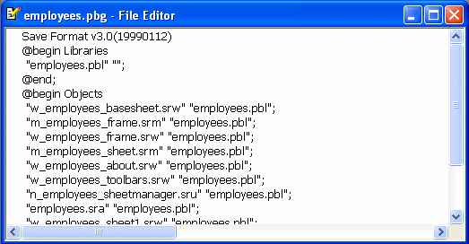

Objects in targets under source control must be managed differently than the same objects in targets that are not under source control.
You must check out a target file from source control before you can modify its properties. If objects in a source-controlled target are not themselves registered in source control, you can add them to or delete them from the local target without checking out the target. However, you must remove a source-controlled object from the source control system before you can delete the same object from the local copy of the target (whether or not the target itself is under source control).
Although you can add objects to a source-controlled target without checking out the target from source control, you cannot add existing libraries to the library list of a source-controlled PowerScript target unless the target is checked out.
For information on removing an object from source control, see "Removing objects from source control".
You cannot copy a source-controlled object to a destination PBL in the same directory as the source PBL. Generally when you work with source control, objects with the same name should not exist in more than one PBL in the same directory.
Moving an object that is not under source control to a destination PBL having a source-controlled object with the same name is permitted only when the second object is checked out of source control.
You cannot move an object from a source PBL if the object is under source control, even when the object has been checked out. The right way to move an object under source control is described below.
 To move an object under source control from one PBL to another:
To move an object under source control from one PBL to another:
Export the object from the first PBL.
Remove the object from source control.
Delete the object from the first PBL.
Import the object into the second PBL.
Register the object in source control once again.
PowerBuilder creates and uses PBG files to determine if any objects present on a source control server are missing from local PowerScript targets. Up-to-date PBG files insure that the latest objects in source control are available to all developers on a project, and that the objects are associated with a named PBL file.
 PBG files and Web targets PowerBuilder also creates PBG files for Web targets, but these
list only the directory structure for the targets, not the individual
files. Since Web Target files are flat files, you can check them
out (or get the latest versions) directly from source control without
having to compile them into PBLs.
PBG files and Web targets PowerBuilder also creates PBG files for Web targets, but these
list only the directory structure for the targets, not the individual
files. Since Web Target files are flat files, you can check them
out (or get the latest versions) directly from source control without
having to compile them into PBLs.
Ideally, PBG files are not necessary. If the source control system exposes the latest additions of objects in a project through its SCC interface, PowerBuilder can obtain the list of all objects added to a project since the last status refresh. However, many source control systems do not support this, so PowerBuilder uses the PBG files to make sure it has an up-to-date list of objects under source control.
PBG files are registered and checked in to source control separately from all other objects in PowerBuilder. They are automatically updated to include new objects that are added to source control, but they can easily get out of sync when multiple users simultaneously register objects to (or delete objects from) the same source control project. For example, it is possible to add an object to source control successfully yet have the check-in of the PBG file fail because it is locked by another user.
You cannot see the PBG files in the System Tree or Library painter unless you set the root for these views to the file system. To edit PBG files manually, you should check them out of source control using the source control manager and open them in a text editor. (If you are using PBNative, you can edit PBG files directly in the server storage location, without checking them out of source control.)
You can manually add objects to the PBG file for a PowerBuilder library by including a new line for each object after the @begin Objects line. The following is an example of the contents of a PBG file for a PBL that is saved to a subdirectory (target1) of the workspace associated with the source control project:
